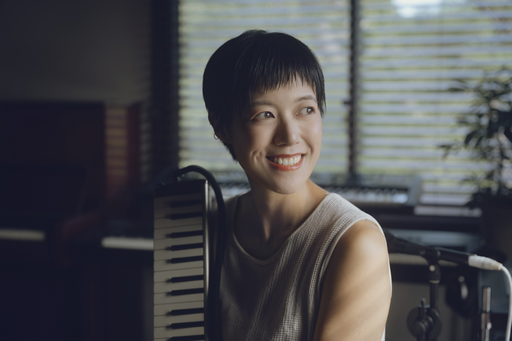
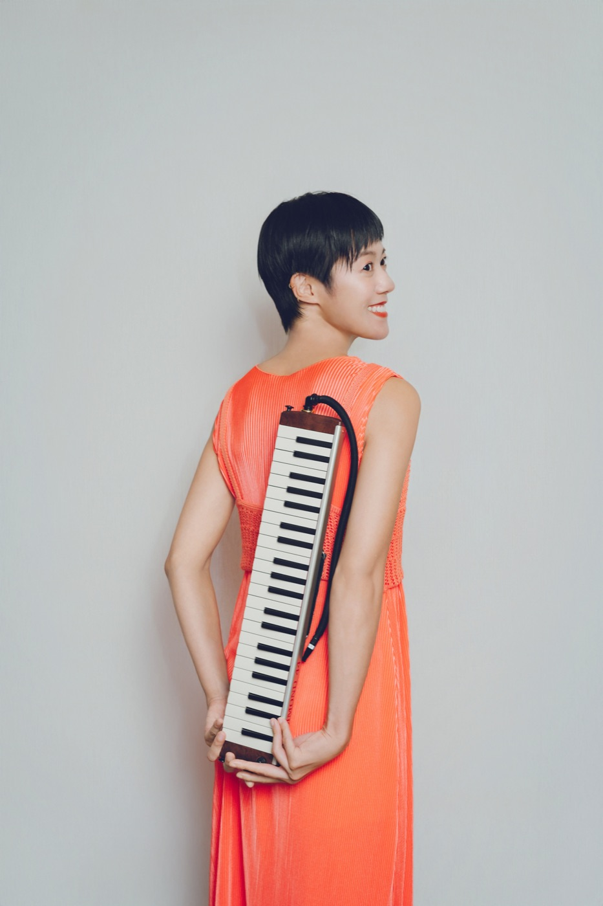
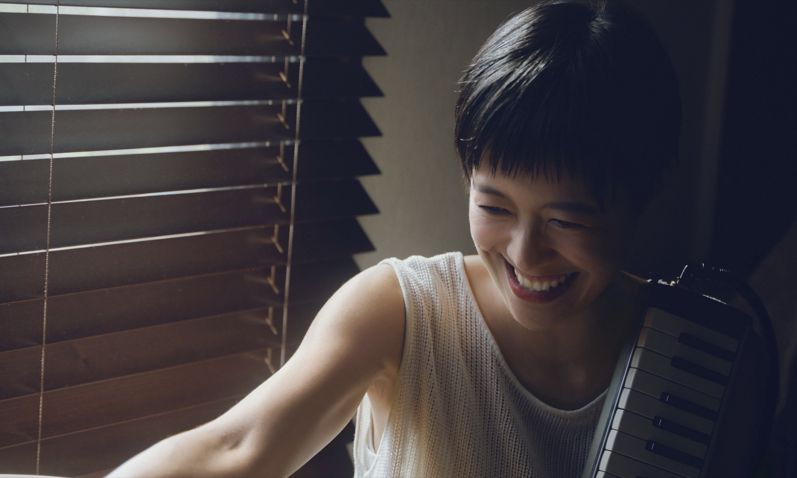
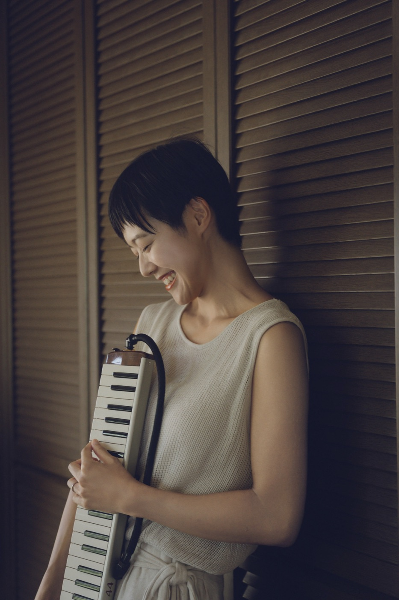

鍵盤ハーモニカ
ソロ、アンサンブル、学校公演、レコーディング。ミューザ川崎シンフォニーホール、札幌コンサートホールKitara、各地の市民文化会館などで演奏。リコーダー・鍵盤ハーモニカ・ピアノによるユニット「おんがくしつトリオ」でも活動している。

SHIORI SUGAYA ／ すがやしおり
鍵盤ハーモニカ奏者・ピアニスト・作編曲家
プロフィール

菅谷詩織（すがやしおり／Shiori Sugaya）は、鍵盤ハーモニカ奏者、ピアニスト、作編曲家として活動する音楽家。
6歳よりピアノ、12歳よりサクソフォンを始める。高校ではサクソフォンを専攻し、2年次にピアノへ転向。昭和音楽大学ピアノ演奏家コースを卒業。18歳から独学で鍵盤ハーモニカを始める。
音楽の土台はクラシックでつくられた。その後はポピュラー音楽の現場で演奏を重ね、そこで培った感覚が、鍵盤ハーモニカとピアノの演奏スタイルの核になっている。
コンサート、レコーディング、学校公演、親子向け公演など、幅広く演奏活動を行っている。NHK Eテレ「沼にハマってきいてみた」に出演。リコーダー、鍵盤ハーモニカ、ピアノによる「おんがくしつトリオ」メンバー。
YouTubeチャンネル「すがやしおり」では、鍵盤ハーモニカの演奏をはじめ、息・発音・音色についての解説を発信。チャンネル登録者数は1万人を超える。ソロ・アンサンブル楽譜の制作も行っている。
指導者としては、個人・グループレッスンのほか、鍵盤ハーモニカのアンサンブルクラスを主宰。ピアノ指導者や幼稚園教諭を対象とした講座・セミナーも行ってきた。
また、作編曲家として、テレビCMやWeb CMをはじめとする映像音楽を数多く手がけている。演奏者としては、アニメ・ゲーム作品のレコーディングにも参加。
「Shiori Sugaya」名義ではオリジナルピアノ作品を発表し、150以上の国と地域で累計300万回以上再生されている。
活動
ソロ、アンサンブル、学校公演、レコーディング。ミューザ川崎シンフォニーホール、札幌コンサートホールKitara、各地の市民文化会館などで演奏。リコーダー・鍵盤ハーモニカ・ピアノによるユニット「おんがくしつトリオ」でも活動している。
演奏、レコーディング。これまでにアーティストのツアーや、ラジオ・テレビ出演のサポートも務めてきた。「Shiori Sugaya」名義でアルバム「Shade」「Phase」、EP「Uncontrived」を発表。
演奏会用アレンジや、鍵盤ハーモニカ用楽譜の制作。CM音楽では、これまでに三井物産、日清食品、Boehringer Ingelheim、Jimmy Choo、Grand Seiko などを担当。
個人・グループレッスン、鍵盤ハーモニカのアンサンブルクラス主宰、ピアノ指導者・幼稚園教諭向けの講座。

演奏動画
ご依頼
これまでにいただいたご依頼例です。
お返事は通常3日以内にいたします。
ご依頼・お問い合わせ ↗
公式リンク
掲載・外部プロフィール
English profile
Shiori Sugaya is a Japanese melodica player, pianist, composer and arranger. Grounded in classical music, she performs in concert halls, schools and recording studios, and shares the expressive possibilities of the melodica through performance, arranging and music education.